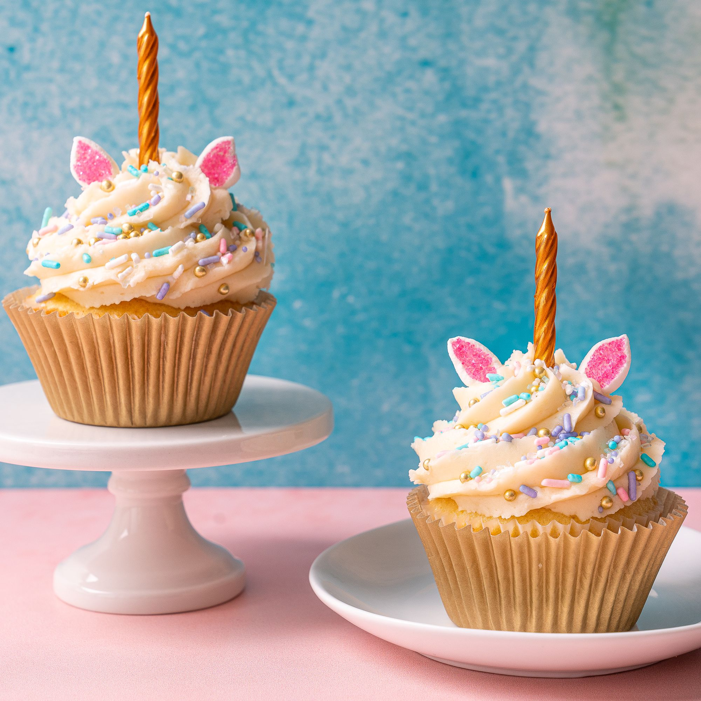

Best cupcake in the worldAh, delicious cupcakes topped in frosting. They're the perfect individual-size
treat for birthdays, weddings, and just an average weekday. Yes, the quickest way to make a
cupcake is to start with a cake mix, and we're definitely not opposed to creative twists on a mix.
But if you're really wanting to impress your family and friends, it's nice to know how to make
vanilla cupcakes (and all other flavors) from scratch.
How to Make Cupcakes
If you've already worked on your layered cake-making skills, it's going to be a
cinch to start baking cupcakes.
Before we get started, choose a cupcake recipe and preheat your oven, which will ensure even
and accurate baking.
You can also turn a cake recipe into cupcakes (like this easy yellow cake), just plan to use ¼
cup of batter for each cupcake.
Step 1: Prepare Ingredients
Allow the butter and eggs to stand at room temperature for 30 minutes. This will
make the butter easier to blend.
Room temperature eggs allow more air to be incorporated into your batter for a lighter texture.
Grease and flour twelve 2½-inch muffin cups or line with paper baking cups (Target); set aside.
Step 2: Combine Butter and Sugar
Many cupcake recipes call for beating the butter and sugar together for 1
minute, using a hand mixer $34.99 (Bed Bath & Beyond) or stand mixer.
This is called creaming, and it creates little pockets of air in the mixture, resulting in
light and fluffy cupcakes. Just be sure not to overbeat the mixture.
You can tell you've gone too far if the butter starts to separate.
Step 3: Add Eggs and Vanilla
After creaming the butter and sugar, most cupcake recipes next call for adding the eggs.
Depending on the recipe, you may add whole eggs, just egg yolks, or just egg whites.
Some recipes include other ingredients to add along with the eggs, such as vanilla or other
flavorings.
Kitchen Tip: Break eggs individually into a custard cup or small
bowl
first.
This way, if you get shell fragments, you can easily fish them out, rather than trying to get them
out of the batter
Step 4: Alternate Adding Dry and Wet Ingredients
In a separate mixing bowl (Crate & Barrel), stir together the dry ingredients,
such as flour, salt, and baking powder. Most cupcake recipes call for alternately adding the dry
ingredients and the wet ingredients (like milk or cream), beating between each addition. Don't be
tempted to add everything at once. Adding all of the wet ingredients at once can cause the batter to
separate, resulting in a heavy cake. Adding all of the dry ingredients at once can make the batter
too thick, which can lead to overmixing.
Step 5: Fill the Cupcake Liners
Wondering how much batter to use per cupcake? For standard 2½-inch cupcakes,
fill cupcake liners with ¼ cup batter to about ⅔ to ¾ of the way full. Avoid adding too much batter,
or the cupcakes will overflow the cups as they bake and cause a mess. Here are some easy ways to
fill cupcake liners with cupcake batter:
If the batter is thick, use two spoons to scoop it into the cups.
Use a medium ice cream or cookie scoop to spoon batter into the cups.
Fill a heavy resealable plastic bag with batter and cut a small hole in one
corner.
Squeeze the bag gently to fill the cups. Plug the bag's hole with your finger as you move it to
the
next cup.
If your batter is thin, pour it into a large glass measuring cup. The spout on
the
measuring cup will make it easier to fill cupcake liners with batter.
Test Kitchen Tip: Cupcakes rise higher in
paper liners
and are easier to remove from the pan. They're also easier to grasp for frosting or decorating.
Step 6: Bake and Cool Cupcakes
For chocolate, vanilla, and most other cupcake recipes, you'll want to bake for 15 to 20 minutes in
an oven preheated to 350°F. Test for doneness by inserting a wooden toothpick into the center a
cupcake. If the toothpick is clean when you remove it, the cupcakes are done. If wet batter or
several moist crumbs cling to the toothpick, they need to bake longer. Cool the cupcakes for 5
minutes in the pan before moving them to a wire rack to cool completely
Here are some general guidelines for adjusting baking times for larger or smaller
cupcakes:
How to make mini cupcakes: A recipe that makes 24 standard (2½-inch) cupcakes
will
make about 64 mini cupcakes. Generally, they're baked in a 350°F oven for 10 to 15 minutes.
How to make jumbo cupcakes: A recipe that makes 24 standard (2½-inch) cupcakes
will
make 10 to 16 jumbo cupcakes. Typically, they're baked in a 350°F oven about 25 minutes.
Step 7: Frost and Decorate
For the prettiest cupcakes, start with decorative liners. It's the easiest way
to spruce them up for special occasions. From there, use a piping bag (Michaels) to decorate your
cupcakes. If you don't have piping bags, use a resealable plastic bag with the end snipped off, or
simply spread with a knife. For an unforgettable dessert, feel free to go wild with holiday
toppings, sprinkles, nuts, or whatever your heart desires.
Lara Rami
I'm Lara, Wife, and Mother, I love Cooking, travel, and nature. I'm working as a
chef in a restaurant.
Categories
10 post
5 post
7 post
Latest Posts
10 Top Places You Can't Miss When Shopping in London